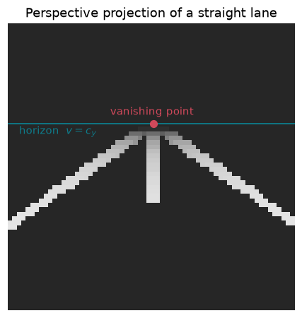
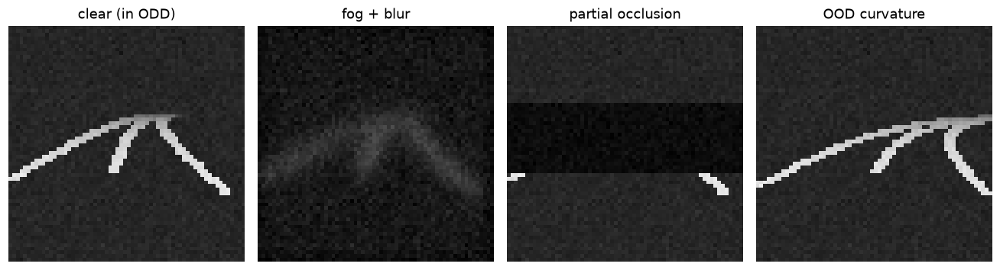

Goal. Replace direct access to the state with a camera. We derive the pinhole
projection, use it to render small synthetic road images, and model the ways the
real world degrades them. This gives a controllable, perfectly-labelled stand-in
for a perception sensor - and, crucially, a way to leave its operating domain on
demand.
Why synthetic images? Because we get exact ground truth for free, we can dial any
degradation continuously, and we need no dataset. The point of the course is not
computer vision accuracy but the trustworthy use of a perception estimate in a
control loop, so a transparent renderer is the right tool.
A pinhole camera projects a 3D point onto the image plane by a perspective
division. Let a point have coordinates (X_c, Y_c, Z_c) in the camera frame, with
Z_c along the optical axis. By similar triangles the point at depth Z_c
scales to the image plane at focal length f:
u = f\,\frac{X_c}{Z_c} + c_x, \qquad v = f\,\frac{Y_c}{Z_c} + c_y,
where (c_x, c_y) is the principal point. In homogeneous coordinates this is linear
[1,2]:
The nonlinearity that matters is the division by Z_c: near things are large, far
things shrink, and parallel lines converge.
2. The road is a plane: forward-camera geometry
For lane keeping the scene of interest is the ground plane. Mount the camera at
height h above the road with its optical axis pointing forward along the road, so
that in camera coordinates a ground point at longitudinal distance s ahead and
lateral offset y has Z_c = s (depth), X_c = y (right), and Y_c = h (the road
is h below the camera). Substituting into the pinhole equations:
\boxed{\;u = c_x + f\,\frac{y}{s},\qquad v = c_y + f\,\frac{h}{s}\;}
Two consequences are worth noting. As s\to\infty the projection tends to
(c_x, c_y) regardless of y: all lane lines converge to a single vanishing
point on the horizon at row v=c_y. And because the road is planar, the whole
road-to-image map is a 3\times 3homography [1] - a fact lane-detection
systems exploit to "flatten" the road into a bird's-eye view.
The lane centreline, in the vehicle frame, is well approximated to second order in
look-ahead by a parabola (a clothoid segment linearised in s) [4,5]:
the three terms being the lateral offset, the drift due to heading error, and the
road curvature. Lane markings sit at y_{road}(s)\pm w/2.
import numpy as np, matplotlib.pyplot as plt
Himg = Wimg = 64
FOCAL, CAM_H, HORIZON = 55.0, 1.25, 0.34*Himg # focal [px], camera height [m], horizon row
def project(s, y):
return Wimg/2 + FOCAL*y/s, HORIZON + FOCAL*CAM_H/s
def gaussian_blur(img, sigma):
if sigma <= 1e-3: return img
r = max(1, int(round(3*sigma))); xk = np.arange(-r, r+1)
k = np.exp(-0.5*(xk/sigma)**2); k /= k.sum()
out = np.apply_along_axis(lambda m: np.convolve(m, k, 'same'), 0, img)
return np.apply_along_axis(lambda m: np.convolve(m, k, 'same'), 1, out)
def render(e_y, e_psi, kappa, brightness=1.0, blur=0.0, occ=0.0, noise=0.02, seed=0):
rng = np.random.default_rng(seed)
img = np.full((Himg, Wimg), 0.15, np.float32) # dark asphalt
s = np.linspace(3, 45, 400)
yc = -e_y - e_psi*s + 0.5*kappa*s**2
fade = np.clip(1 - (s-3)/42, .2, 1) # far markings dimmer
for off, dashed in ((-1.75, False), (1.75, False), (0.0, True)):
u, v = project(s, yc + off)
for i in range(len(s)):
if dashed and int(s[i]) % 3 == 0: continue
rr, cc = int(round(v[i])), int(round(u[i]))
if 0 <= rr < Himg and 0 <= cc < Wimg:
for dc in (-1, 0, 1):
if 0 <= cc+dc < Wimg: img[rr, cc+dc] = max(img[rr, cc+dc], 0.9*fade[i])
img = img * brightness
if occ > 0:
top = int(HORIZON); img[top:top+int(occ*(Himg-top))] = 0.05
img = gaussian_blur(img, blur)
return np.clip(img + rng.normal(0, noise, img.shape), 0, 1)
# a clean straight lane, with the horizon and vanishing point marked
img = render(0.0, 0.0, 0.0, noise=0.0)
plt.figure(figsize=(4.2, 4.2))
plt.imshow(img, cmap="gray", vmin=0, vmax=1)
plt.axhline(HORIZON, color="#0e7c8b", lw=1.2)
plt.scatter([Wimg/2], [HORIZON], color="#d1495b", s=40, zorder=3)
plt.annotate("vanishing point", (Wimg/2, HORIZON), color="#d1495b",
textcoords="offset points", xytext=(-40, 8))
plt.annotate("horizon $v=c_y$", (2, HORIZON), color="#0e7c8b",
textcoords="offset points", xytext=(0, -10))
plt.title("Perspective projection of a straight lane"); plt.axis("off")
plt.tight_layout(); plt.show()

3. Modelling the degradations
Each condition the ODD monitor watches corresponds to a physical or measurement
process [2,3]:
Defocus / atmospheric blur is a convolution with a point-spread function
(PSF). A Gaussian PSF of standard deviation \sigma is the standard
approximation, I_{blur} = I * g_\sigma. It is separable, so we apply a 1-D
kernel along rows then columns.
Illumination acts as a multiplicative gain I \mapsto b\,I (ignoring gamma).
Occlusion removes a region of the image (missing data), here a band of the far
road.
Sensor noise is additive; read noise is well modelled as Gaussian
\mathcal N(0,\sigma_n^2), shot noise as Poisson [6]. We use additive Gaussian.
Below: the Gaussian PSF kernel and its effect on the rendered lane.
# The four regimes used throughout the course
panels = [("clear (in ODD)", dict(kappa=0.012)),
("fog + blur", dict(kappa=0.012, brightness=0.6, blur=2.6, noise=0.03)),
("partial occlusion", dict(kappa=0.012, occ=0.45)),
("OOD curvature", dict(kappa=0.05))]
fig, ax = plt.subplots(1, 4, figsize=(12, 3.2))
for a, (name, kw) in zip(ax, panels):
a.imshow(render(0.3, 0.02, **kw), cmap="gray", vmin=0, vmax=1)
a.set_title(name); a.axis("off")
plt.tight_layout(); plt.show()

4. Cheap pixel features for the ODD monitor
The operational-design-domain monitor (notebook 06) does not have the true
conditions; it must estimate them from the image. Two very cheap statistics suffice
as proxies:
Brightness = mean intensity, tracking the illumination gain.
Sharpness = mean squared image gradient (a Tenengrad-style focus measure),
which falls as blur rises because convolution with the PSF attenuates high
spatial frequencies [3].
Both are monotone in their degradation, so a simple threshold on them detects
"outside the ODD" from pixels alone.
5. Why out-of-distribution curvature is invisible in the pixels
Blur, darkness and occlusion are visible degradations: they change the image
statistics, so a pixel-level monitor can flag them. An out-of-distribution
curvature is different. A sharper-than-trained curve still renders as a perfectly
clean, well-exposed, in-focus lane - its brightness and sharpness are essentially
those of an in-domain curve. Nothing local in the pixels says "you have never seen
this geometry."
This is the crux of the whole course. The novelty lives in the regime, not in the
image quality, so no amount of pixel-level confidence or image-feature monitoring
will catch it. Detecting it requires comparing the perception output against a
model of the dynamics - the innovation / NIS test of notebook 05.
Derive the vanishing-point row v=c_y by taking s\to\infty in the projection.
Where does the lateral offset e_y go in that limit, and why?
The bird's-eye ("inverse perspective") view undoes the homography. Using
u=c_x+f y/s,\ v=c_y+f h/s, solve for (s, y) given (u, v) and map the clear
image back to a top-down road. What happens to noise near the horizon?
Replace the Gaussian PSF with a uniform disc (defocus) kernel of the same radius.
How does the sharpness-vs-blur curve change?
Add a gamma nonlinearity I\mapsto I^{\gamma} to the illumination model and
check whether mean intensity is still a good brightness proxy.
References
R. Hartley, A. Zisserman. Multiple View Geometry in Computer Vision, 2nd ed. Cambridge University Press, 2004. (Pinhole model, planar homography, vanishing points.)
R. Szeliski. Computer Vision: Algorithms and Applications, 2nd ed. Springer, 2022. (Image formation, blur, noise.)
R. C. Gonzalez, R. E. Woods. Digital Image Processing, 4th ed. Pearson, 2018. (Point-spread functions, convolution, focus measures, noise models.)
E. D. Dickmanns, B. D. Mysliwetz. Recursive 3-D road and relative ego-state recognition. IEEE Transactions on Pattern Analysis and Machine Intelligence, 14(2):199-213, 1992. doi:10.1109/34.126801 (Clothoid lane model.)
J. C. McCall, M. M. Trivedi. Video-based lane estimation and tracking for driver assistance. IEEE Transactions on Intelligent Transportation Systems, 7(1):20-37, 2006. doi:10.1109/TITS.2006.869595 (The y=a+bs+cs^2 lane model.)
G. E. Healey, R. Kondepudy. Radiometric CCD camera calibration and noise estimation. IEEE Transactions on Pattern Analysis and Machine Intelligence, 16(3):267-276, 1994. doi:10.1109/34.276126 (Sensor noise model.)